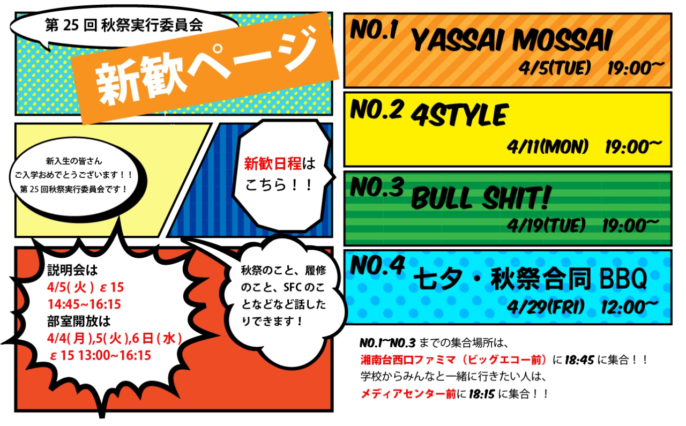

慶應義塾大学
湘南藤沢キャンパス
第25回秋祭
TOP
第25回秋祭とは？
第25回秋祭実行委員会 代表 松室より挨拶
今年度ロゴについて
最新情報
こちらより秋祭実行委員会からの最新情報をご確認いただけます。
TwitterやFacebook等SNSも更新させていただいております。
@akisai_sfcさんのツイート
慶應義塾大学 SFC 秋祭
ご協賛者様へ
第25回秋祭実行委員会 渉外局長による挨拶文を掲載しております。
アクセス
〒252-0082
神奈川県藤沢市遠藤 5322
お問い合わせ
当ウェブサイトより実行委員に直接のお問い合わせが可能です。
お気軽にご相談ください。
秋祭の様子
新歓日程
